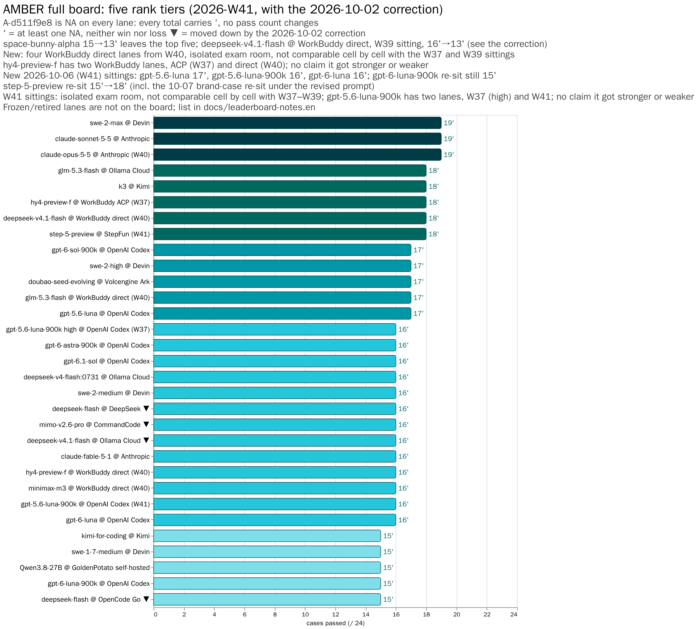
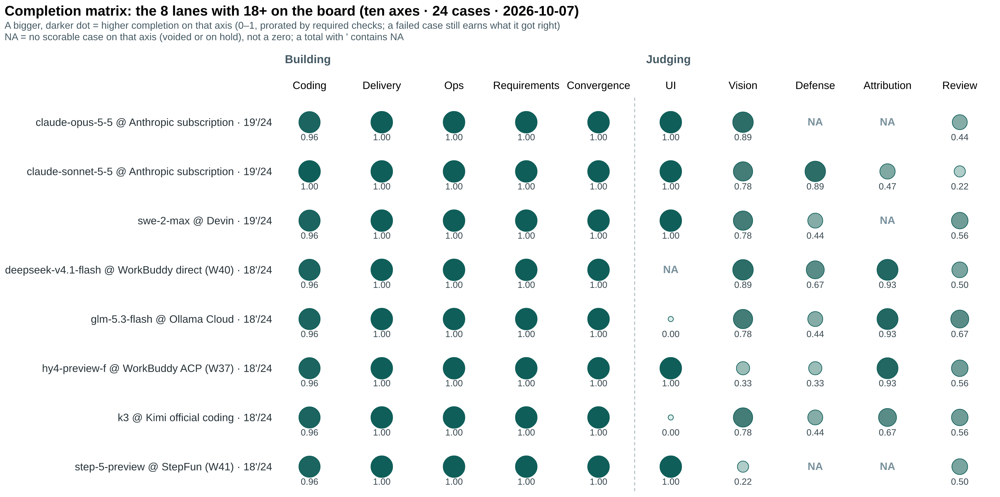
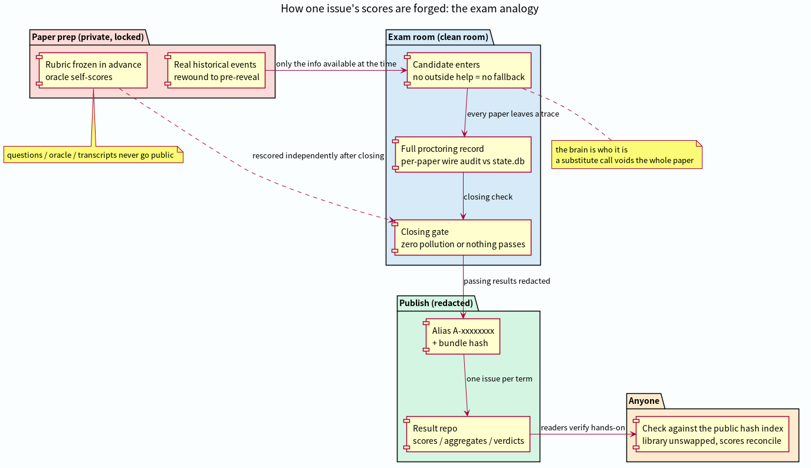
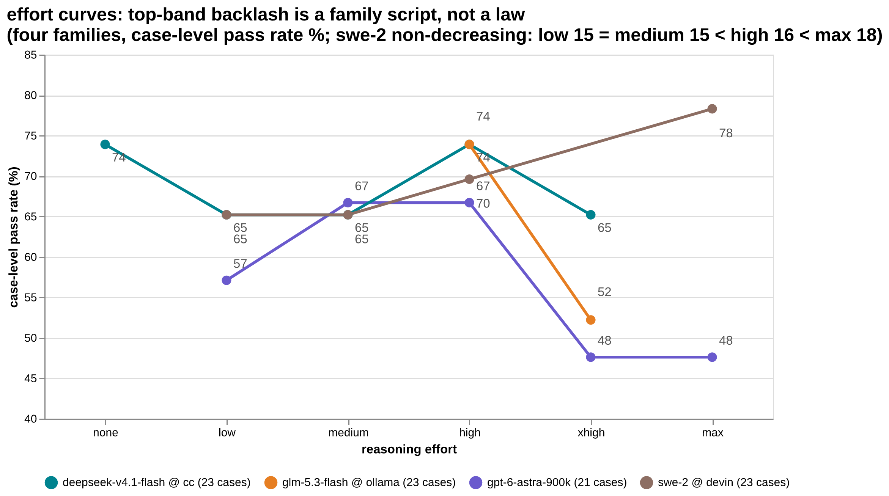
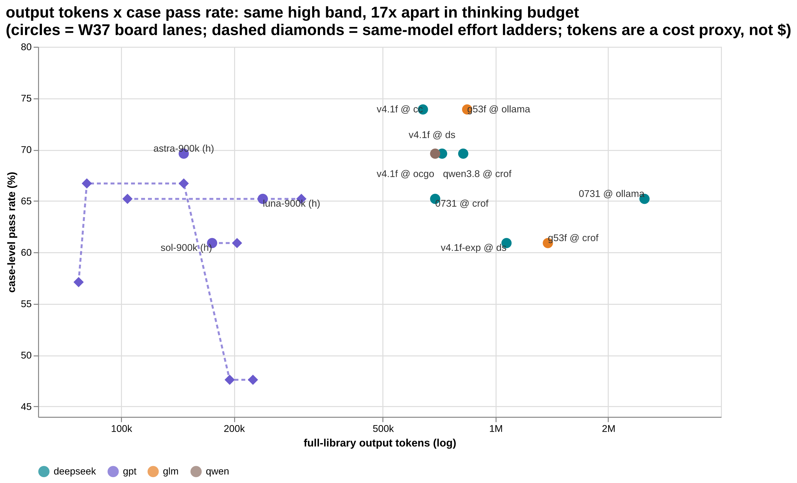
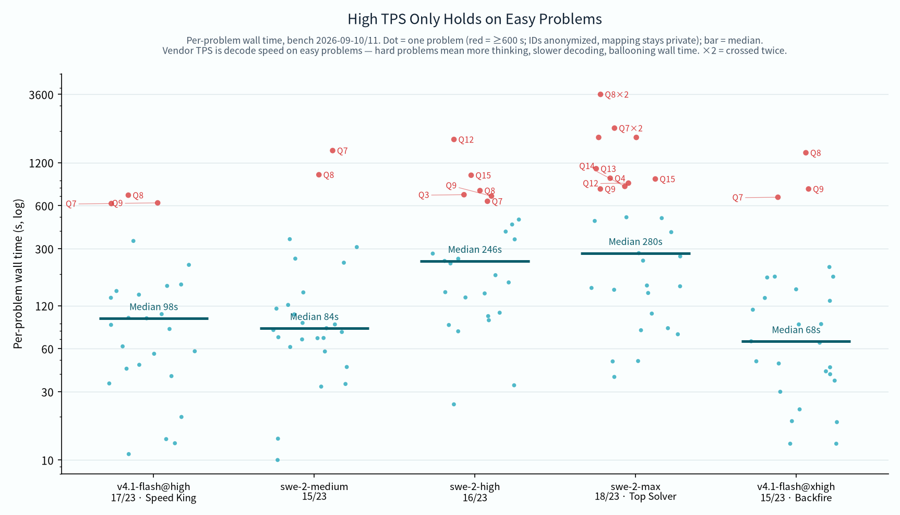

AMBER — real history,
sealed in amber, replayed
We take real, auditable incidents and freeze them at the moment before the answer was revealed. Models must redo the work with only what was knowable then, against a rubric frozen before any output existed. The cases are never published. The scores always are.
The board right now
Same band (high), same 24 cases, same public hash index. Five rank tiers; ties are labeled as ties. Click the chart for details. Glossary: case = one task (from a real incident); paper = one sitting; band = reasoning-effort level.

swe-2-max was scored in W37 with the convergence case folded in; of the former five-way tie at 17/23, three lanes now sit at 18/24. Interactive: hover for values. details →
⚠️ Correction 2026-09-18: the bar now labeled "swe-2-high @ Devin (re-run)" was originally published as swe-2-low — that model does not exist; the server silently routed to swe-2-high.
Same score, different shape
The ten-axis completion matrix: each cell is a face's pin-level completion. Tied totals hide completely different profiles — the matrix shows what the sum can't.

Why the scores can be trusted
Every weekly issue runs like an exam: cases sealed in advance, a clean-room sitting, per-paper wire audits, anonymized publication, and a public index anyone can re-check.

Three counterintuitive findings
Each comes with named boundaries and counterexamples in the original writeups.



Result repos
One repo per lane (model × endpoint × band), one matrix per week, wire audits and hash cross-checks included.
' = contested (held for safety refusal), invalid (infrastructure-related (test harness or scoring environment) cases: held, void or awaiting re-scoring) or integrity (the candidate stepped outside its paper and touched grading material; voided, see the 2026-10-02 correction); none counts as a win or a loss. Every lane with NA carries an apostrophe, including frozen display rows; a hold does not settle the cause. From 2026-10-02 defense case A-d511f9e8 is NA on every lane (correction): every total carries an apostrophe and pass counts do not change. Devin 19'/24 (2 NA); Doubao 17'/24 (3 NA); the frozen gpt-sol display is 15'/23∅ (4 NA), not /24.
Method spec + public hash index + cross-repo weekly board
amber-devin19'/24swe-2-max @ Devin — joint leader (2 NA)
amber-claude19'/24claude-sonnet-5-5 19'/24 (W40, joint leader, no NA apart from A-d511f9e8) · claude-opus-5-5 19'/24 (W40 re-test, W39 17'/24) · claude-fable-5-1 16'/24 @ Anthropic subscription lane
amber-kimi18'/24k3 @ Kimi official coding endpoint + the K2.8 duel
amber-ollama18'/24glm-5.3-flash / d41f @ Ollama Cloud
amber-commandcode15'/23 ∅d41f @ CommandCode — frozen at the owner's call
amber-workbuddy18'/24deepseek-v4.1-flash 18'/24 (W40) · glm-5.3-flash 17'/24 (W40) · hy4-preview-f 16'/24 (W40) · minimax-m3 16'/24 (W40) @ WorkBuddy direct · hy4-preview-f 18'/24 (W37) @ WorkBuddy ACP
amber-gpt17'/24gpt-5.6-luna 17'/24 (W41) · gpt-5.6-luna-900k 16'/24 (W41) · gpt-6-luna 16'/24 (W41) · gpt-6-luna-900k 15'/24 (W41) · gpt-6-astra 16'/24 · 5.6-luna-900k high 16'/24 (W37) · 5.6-sol high 15'/23 ∅ · 6.1-sol 16'/24 @ OpenAI Codex
amber-crof16'/23 ∅qwen3.8-27b @ CrofAI — the $1.15 value king
amber-deepseek16'/24deepseek-flash @ DeepSeek official
amber-opencode15'/24deepseek-flash @ OpenCode Go
amber-doubao17'/24doubao-seed-evolving @ Volcengine Ark Agent Plan
amber-stepfun18'/24step-5-preview @ stepfun plan endpoint — W41 re-test in the isolated exam room; brand case re-sat alone after a prompt revision
amber-goldenpotato15'/24Qwen3.8-27B @ community self-hosted (3× V100)
The rules
Read the method: AMBER Core Specification · public hash index · roadmap